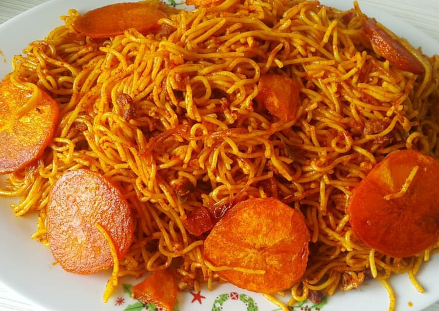

Persian Makaroni: A Flavorful Twist on Classic Spaghetti
Makaroni, an Iranian-style spaghetti dish, is a comforting and delicious meal that brings a unique twist to traditional pasta. It's made with a flavorful mix of ground beef or chicken, sautéed onions, tomatoes, and a perfect blend of spices like turmeric and cinnamon. The dish is layered and cooked until the bottom forms a crispy golden crust, known as "tahdig." This crispy layer adds an irresistible crunch to every bite, making makaroni not just satisfying but truly mouthwatering. It’s a hearty dish that warms the soul and is perfect for any occasion.
Ingredients for Makaroni
- Makaroni (Pasta) - About 250g
- Ground Beef or Chicken - 300g
- Onions - 1 large, finely chopped
- Tomatoes - 2-3 medium, chopped or 1 can of tomato sauce
- Garlic - 2-3 cloves, minced (optional)
- Turmeric - 1 teaspoon
- Cinnamon - 1/2 teaspoon
- Salt - to taste
- Black Pepper - to taste
- Oil - for cooking (vegetable or olive oil)
- Egg - 1 (optional, for richness)
- Bell Pepper - 1, chopped (optional)
- Green Peas - 1/2 cup (optional)
Cooking Tools
- Large Pot - for boiling pasta
- Pan - for sautéing
- Colander - for draining pasta
- Spatula or Wooden Spoon - for mixing
Cooking Instructions for Makaroni
Ingredients Preparation
-
Cook the Pasta:
- Bring a large pot of salted water to a boil.
- Add the makaroni and cook according to package instructions until al dente.
- Drain and set aside.
-
Prepare the Meat Mixture:
- In a large pan, heat 2-3 tablespoons of oil over medium heat.
- Add the chopped onions and sauté until golden brown.
- Add the minced garlic (if using) and cook for another minute.
-
Cook the Meat:
- Add the ground beef or chicken to the pan and cook until browned, breaking it up with a spatula.
- Season with turmeric, cinnamon, salt, and black pepper. Mix well.
- Stir in the chopped tomatoes (or tomato sauce) and bell pepper (if using). Cook until the mixture thickens, about 10-15 minutes. If using peas, add them in the last 5 minutes of cooking.
-
Combine Pasta and Meat:
- Add the cooked makaroni to the meat mixture.
- Mix everything together gently, ensuring the pasta is well-coated with the sauce. If the mixture looks too dry, you can add a splash of water or more tomato sauce.
-
Layer and Cook:
- If you want a crispy crust (tahdig), you can use a non-stick pot or a heavy-bottomed pan.
- Spread half of the makaroni mixture evenly on the bottom of the pot.
- Beat the egg (if using) and pour it over the top.
- Layer the remaining makaroni on top, pressing it down slightly.
- Drizzle a little oil on top to help it crisp up.
-
Cook on Low Heat:
- Cover the pot with a lid and cook on low heat for about 20-30 minutes. You can check occasionally to avoid burning.
- When the bottom is golden brown and crispy, it’s ready to serve.
-
Serve:
- Gently invert the pot onto a serving dish to showcase the crispy bottom.
- Serve warm, garnished with fresh herbs or a side salad if desired.
Tips:
- Adjust the spices according to your taste.
- Feel free to add other vegetables like carrots or zucchini for more flavor and nutrition.
- Leftovers can be refrigerated and reheated; the flavors often improve overnight!